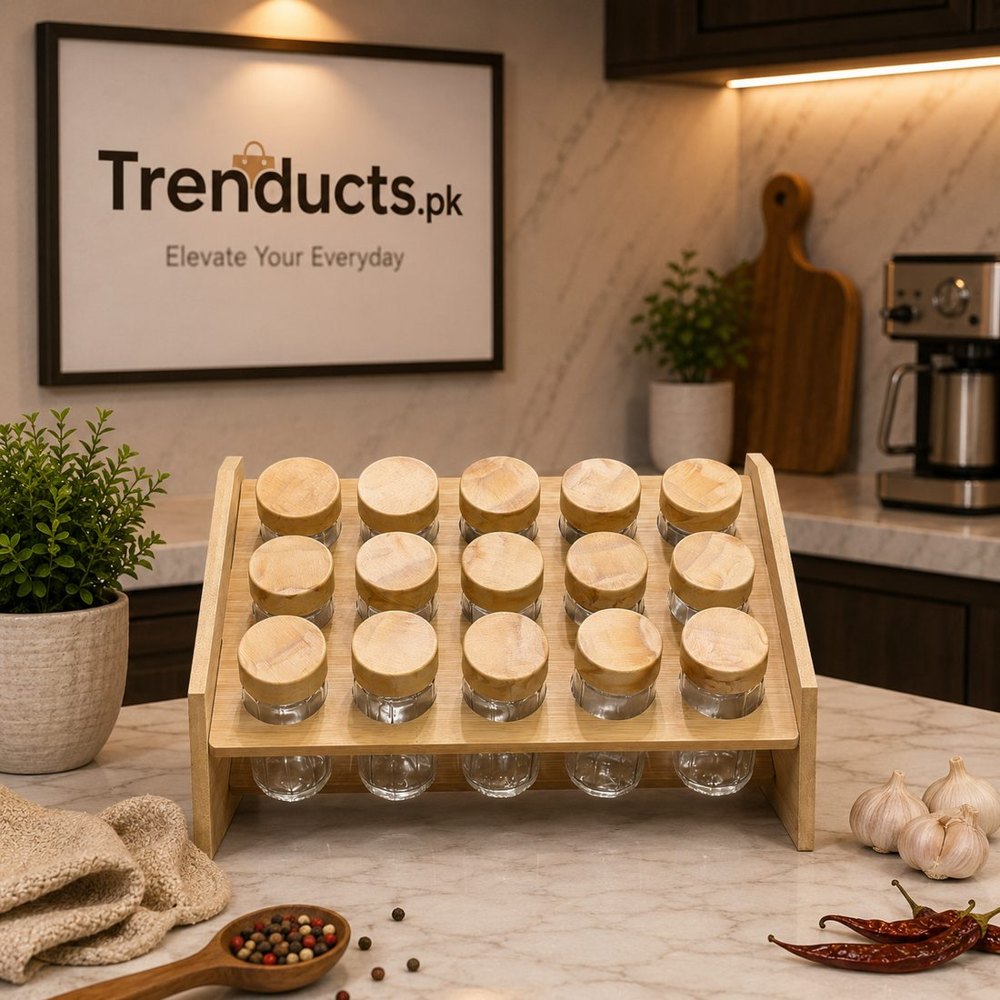
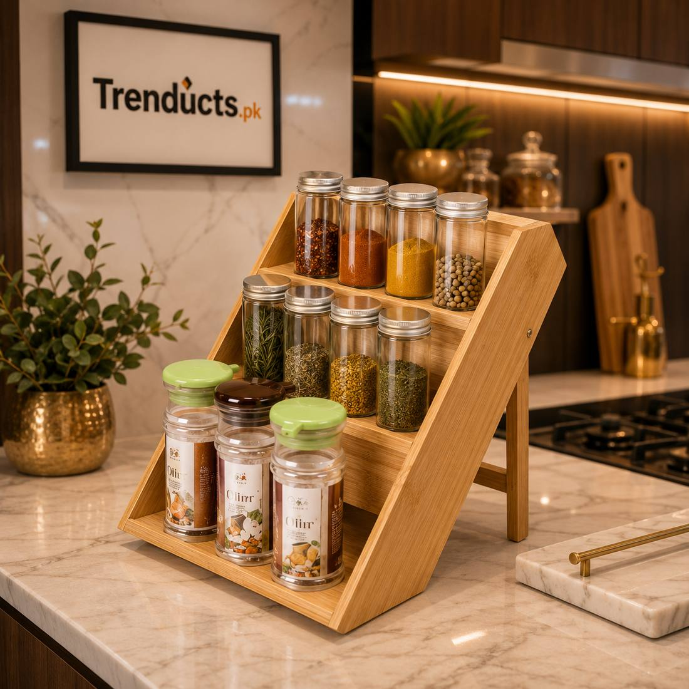

Watch any experienced Pakistani cook make a salan and you will notice something: their hands move without searching. Haldi, lal mirch, namak, dhania powder, zeera and garam masala are all within reach, and they add each one by feel. That speed comes from habit, but it also comes from organisation. When spices are scattered in mismatched packets around the kitchen, cooking takes longer and mistakes happen.
A daily spice station, sometimes called a masala dabba, groups the spices you use every day in one place. This guide explains how to set one up, which spices belong in it, and how to keep them fresh in Pakistan's heat and humidity.
Separate daily spices from occasional ones
Most kitchens have twenty or thirty spices, but only six to nine are used every day. The rest, like whole cardamom, star anise, carom seeds or kalonji, come out for specific recipes. Divide your spices into two groups. Daily ones go into the main station near the stove. Occasional ones go into a cupboard or drawer, clearly labelled. This alone makes the counter calmer and cooking faster.
The core daily spices
For most Pakistani households, the daily station includes:

- Salt
- Red chilli powder
- Turmeric (haldi)
- Coriander powder (dhania)
- Cumin seeds or powder (zeera)
- Garam masala
- Chilli flakes or crushed red pepper
Families who cook a lot of daal might add mustard seeds or whole red chillies for tarka, and some keep ginger garlic paste in a small jar nearby.
Choosing your setup
There are several ways to organise a daily spice station. A round steel masala dabba with small bowls inside is traditional and compact. Glass jar sets with matching lids look neat on an open counter and let you see levels at a glance. A tiered or inclined bamboo rack holds more jars and keeps labels visible, which suits larger families. For small kitchens, a foldable rack fits into tight corners. If you are upgrading, it helps to look through a range of spice jars and masala racks to find the size and shape that suits your counter.
Keep spices fresh in the heat
Ground spices lose aroma faster than whole spices, especially in hot kitchens. Buy ground spices in smaller quantities, every one or two months, and store the bulk supply in airtight containers in a cool cupboard. Refill your daily jars weekly rather than keeping them overfilled. Keep the station away from the direct heat of the stove and from steam, which causes clumping and fungus. Always use a dry spoon.
Grind your own garam masala
Homemade garam masala tastes far better than packaged versions. Dry roast cumin, coriander seeds, black pepper, cloves, cinnamon, cardamom and bay leaves on low heat until fragrant, let them cool, and grind. Make small batches every few weeks. Store in a small airtight glass jar in your daily station, and the aroma will remind you why it is worth the effort.

Labels and cleaning
Even experienced cooks can confuse red chilli and paprika, or dhania and zeera powder. Simple labels prevent mistakes, especially if other family members or a cook help in the kitchen. Once a month, empty the jars, wipe them with a dry cloth, and check for clumping or insects. Wash and dry jars completely before refilling.
Make it part of a weekly routine
A daily station works best when it is refilled on a fixed day. Many families do it on Sunday along with the weekly sabzi shopping. Check the levels, top up the jars from your bulk supply, and note what needs buying. You will never discover an empty haldi jar in the middle of cooking again.
Final thoughts
A well-organised daily spice station is a small change that pays off at every meal. Separate daily and occasional spices, choose a setup that suits your kitchen, keep everything fresh and labelled, and refill weekly. Cooking becomes quicker, calmer and more consistent, just like it is for the experienced cooks we all learned from.